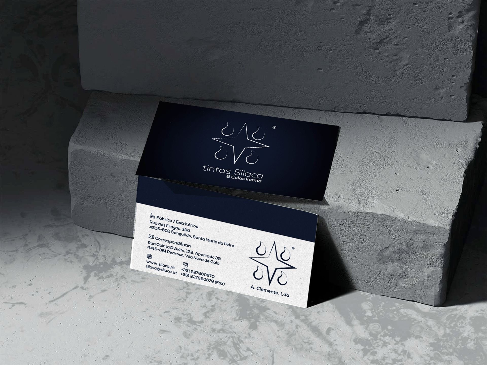
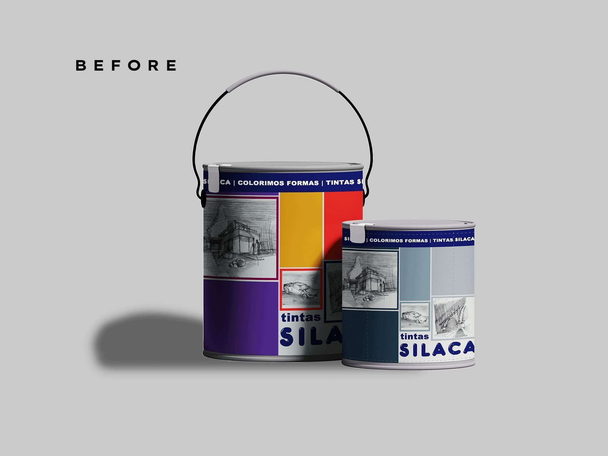
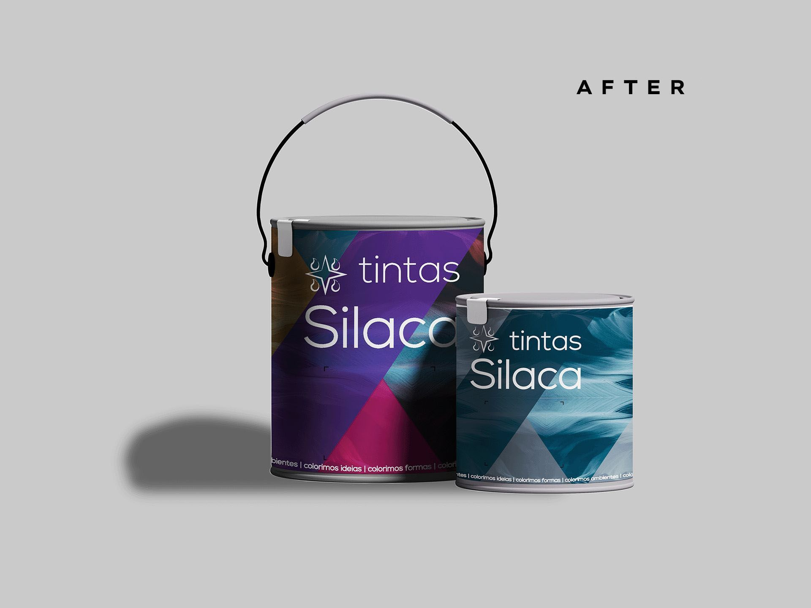
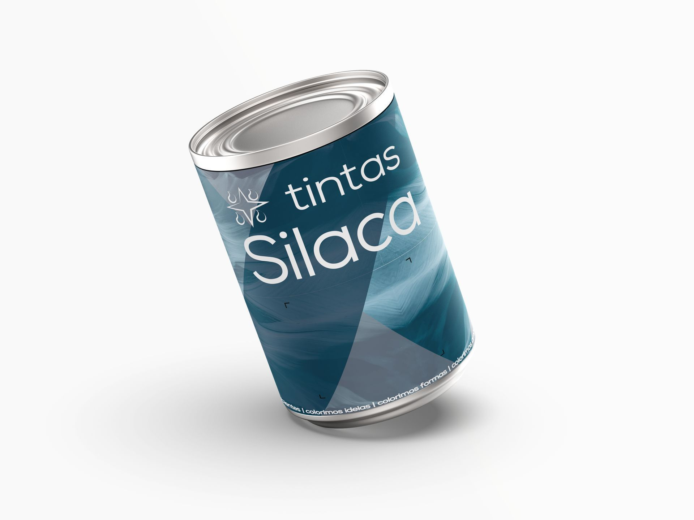
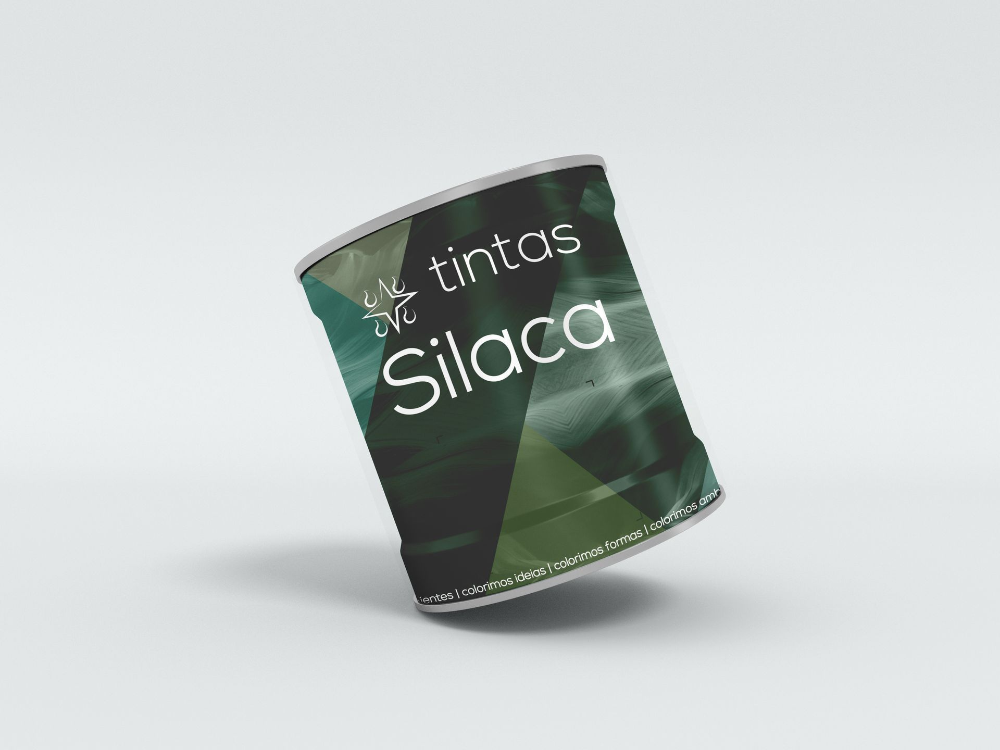
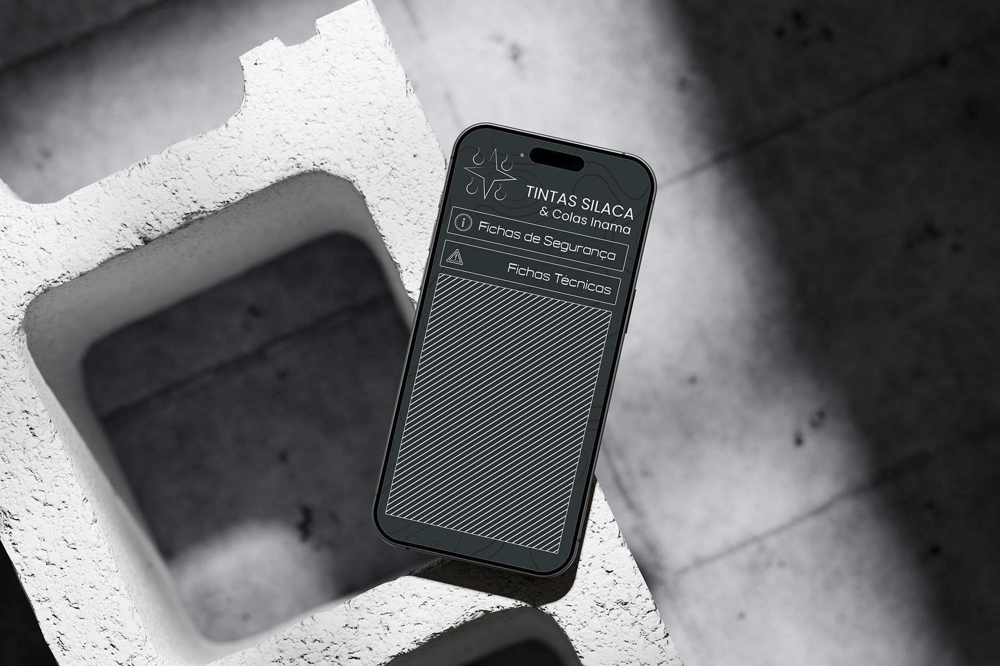
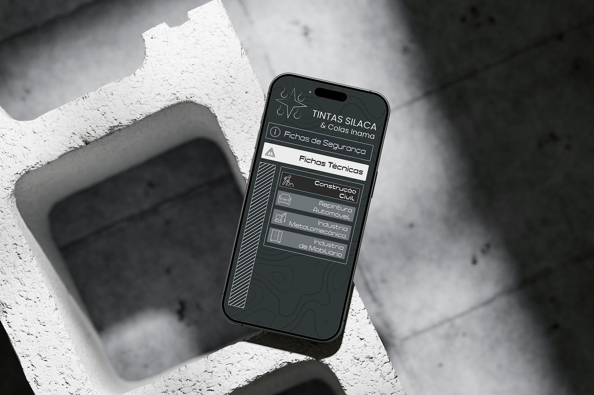
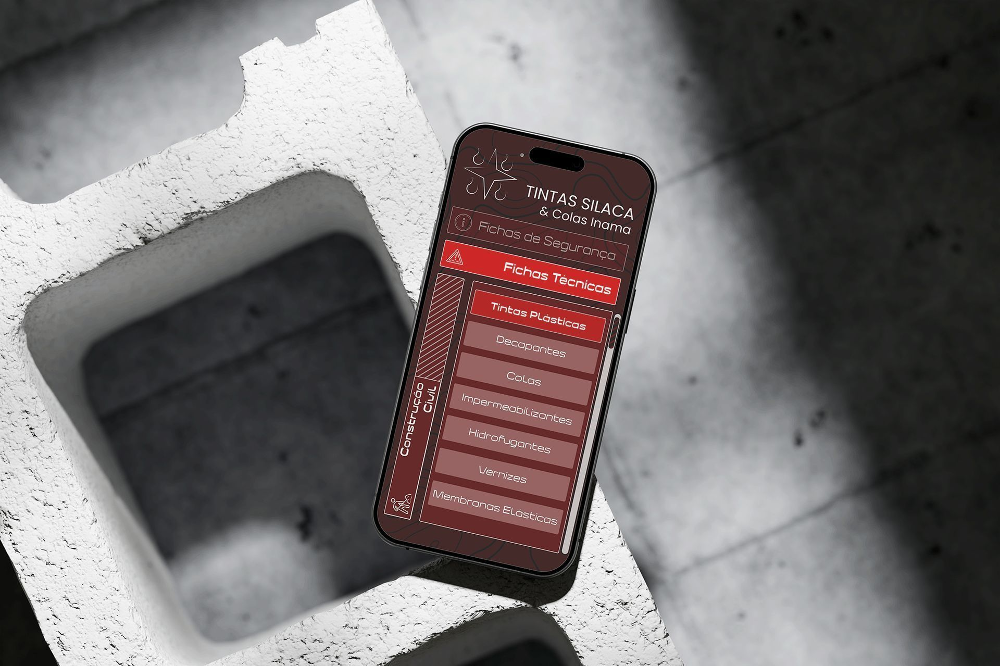
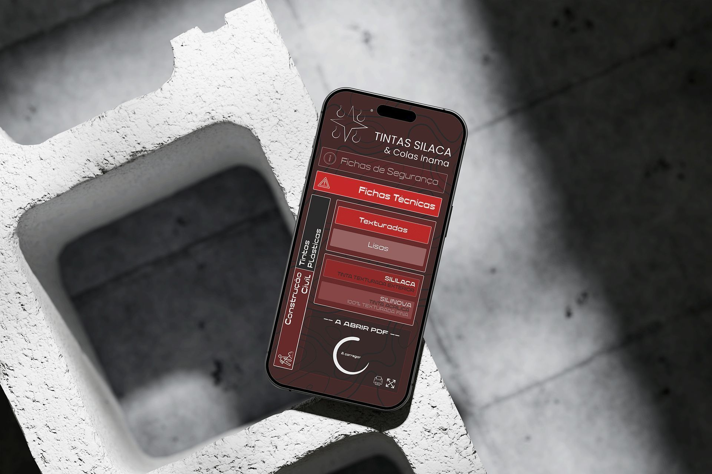

[TRANSITIONING FOUR DECADES OF TECHNICAL PAINT ENGINEERING INTO A SYSTEMATIZED DESIGN IDENTITY]

PACKAGING DESIGN EVOLUTION

The historical container design featured a highly illustrative, crowded format characteristic of late-20th-century paint production.

The updated packaging system uses bold typography, structured line dividers, and color-coded labels to facilitate instant technical navigation.
SILACA RESIN SERIES MOCKUP

PRODUCT LINE DISPLAY

"A minimalist emblem replaced the former illustrative logo, retaining original color equity while signaling technical evolution."
The app interface for technical documentation and security data sheets prioritizes ease of search, high-visibility warning warnings, and brutalist layouts.

01_TECHNICAL_DASHBOARD
02_COLOR_CONFIGURATOR
03_SHEET_EXPLORER
04_SAFETY_INSTRUCTIONSRebranded and structured by Bruno Clemente